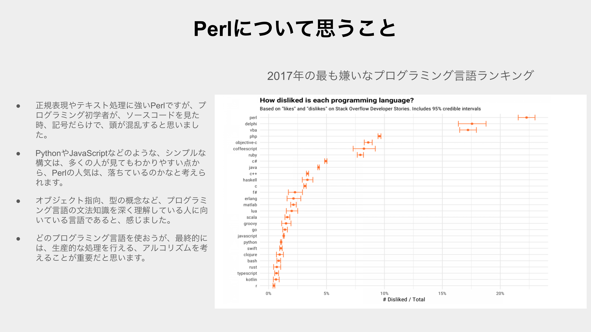
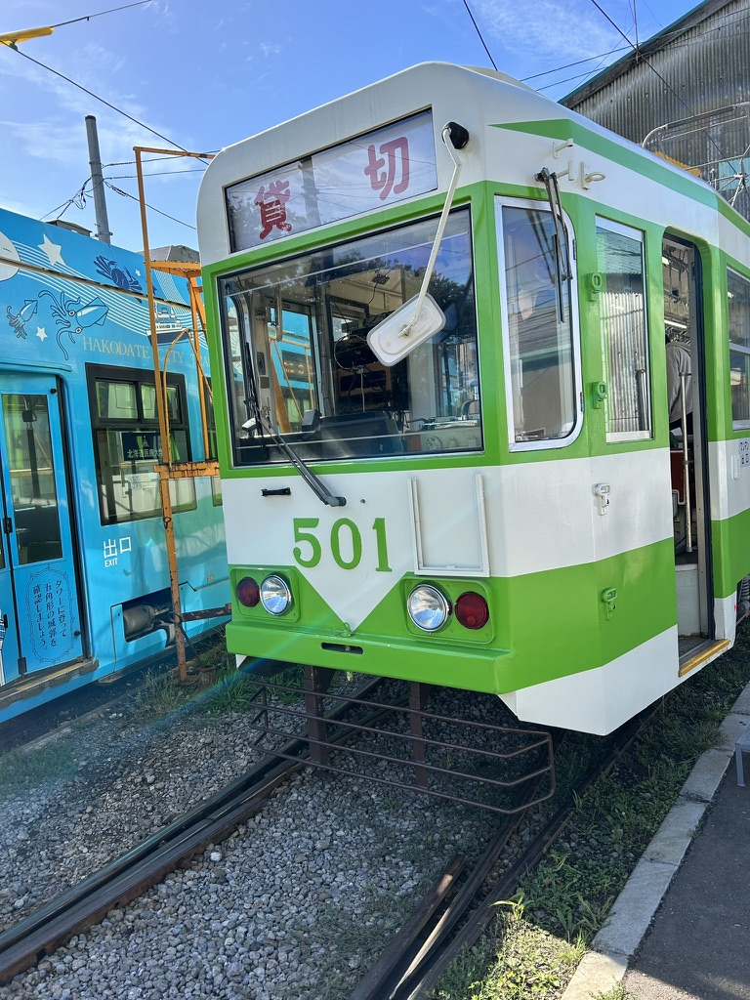

2023年を振り返る #
2023年を振り返る。
3月 #
YAPC::Kyoto 2023 #
YAPC::Kyoto 2023 に参加。初めて、ITカンファレンスに参加した。LTの初登壇をした。
YAPC::Kyoto 2023前日祭 #
「YAPC::Kyoto 2023前日祭」内のイベント「ネコトーストラボ杯争奪 東西対抗 LTマッチ」に、登壇。

8月 #
根性でコーディングをした。 #
NestJSとTypeORMを使って、APIを作成したり、スパゲッティコードを、リファクタリングした。コード量を減らし、可読性を高めた。公式ドキュメントが最強であること、変数や関数の命名が非常に重要であることを学んだ。さらに、可読性を保ち、最小のコードで実装するコーディング術を身につけたいと思った。
Dvorak配列に移行した。 #
キーマップ沼に入り、キーマップを考えるのがめんどくさくなった。Programmer Dvorakという配列を見つけたので、レイヤーを駆使し、ホームポジションから、手を動かなさくて済むように、カスタムキーマップを考えた。
9月 #
函館市電LT #
函館市電LTに参加。非日常感を感じてきた。また、Dvorak配列に移行した話をした。

11月 #
Mermaidで、シーケンス図をたくさん書いた #
API をシーケンス図で、表現していった。Mermaidと、TypeDoc を使用した。PlantUMLと記法は、似ている。API仕様を把握するのが楽になる。プログラミング言語よりも、アルゴリズムが重要であると一層感じた。言語に依存しない、アルゴリズムを考えることが重要であると思った。
おわりに #
2023年は、一番PCと向かい合った1年でした。年末は、Perlと格闘する予定です。